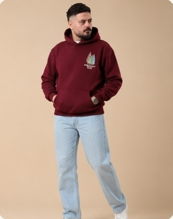

مرجع موحّد لفريق التصوير والمونتاج — من تجهيز القطعة في الاستوديو وحتى تسليم الملفات النهائية للموقع والسوشيال ميديا. الهدف: أن تبدو كل صورة وكأنها من نفس الجلسة، مهما اختلف المصوّر أو الموسم.
النطاقصور المنتج + الفيديو
الاستخدامالمتجر، إنستجرام، الإعلانات
الإصدارv2.0
المحتويات
CONTENTS
01الأسلوب البصريالإحساس العام، الألوان، الثوابت
02المعدات وإعدادات الكاميراكاميرا أو موبايل
03الإضاءة والخلفيةمخطط الاستوديو
04تجهيز القطعة والموديلالكي، الستايلنج، الوضعيات
05قائمة اللقطات الإلزامية٨ لقطات لكل منتج
06التأطير وارتفاع الكاميراالمقاسات والهوامش
07الألوان المتعددة وصور الفلات لايبدون موديل
08الفيديوريلز وستوري وصفحة المنتج
09ما بعد التصوير والتسليمالتعديل، التصدير، تسمية الملفات
10قائمة المراجعة النهائيةقبل وأثناء وبعد الجلسة
القاعدة الذهبية
العميل لا يستطيع لمس القطعة — الصورة هي التي تلمسها نيابةً عنه. كل لقطة يجب أن تجيب عن سؤال: كيف يبدو المنتج؟ كيف يلبس؟ ما خامته؟ ما حجمه على الجسم؟ أي لقطة لا تجيب عن سؤال واضح لا داعي لها.
دليل تصوير الملابس
01
الأسلوب البصري
VISUAL STYLE
شخصية البراند: دافئة، هادئة، واثقة. الصورة نظيفة وبسيطة والبطل دائمًا هو القطعة — لا الخلفية ولا الإكسسوارات.

لوحة ألوان الجلسة
خلفية بيج
#D8BC98
أوف وايت
#F6F2EA
جينز فاتح
بنطلون ثابت
حذاء أبيض
بدون لوجو ظاهر
الثوابت في كل جلسة
نفس لون الخلفية ونفس مسافة الموديل منها
نفس إعداد الإضاءة — يُصوَّر مرة ويُحفَظ
نفس البعد البؤري ونفس ارتفاع الكاميرا لكل نوع لقطة
نفس البنطلون والحذاء لكل الموديلات
تعبير وجه هادئ وطبيعي — بدون ابتسامة مبالغ فيها
المزاج العام
إضاءة ناعمة ودافئة، ظلال خفيفة جدًا، ألوان حقيقية بدون فلاتر. أقرب إلى كتالوج متجر عالمي منه إلى صورة إعلانية صاخبة.
دليل تصوير الملابس
02
المعدات وإعدادات الكاميرا
GEAR & SETTINGS
الثبات أهم من غلاء المعدات. ثبّت الإعدادات من أول لقطة ولا تغيّرها خلال الجلسة حتى تتطابق كل الصور في الألوان والإضاءة.
كاميرا احترافية
العدسة50mm / 85mm / 24-70mm
صيغة الملفRAW + JPG
الحساسيةISO 100–200
فتحة العدسة — موديلf/5.6 – f/8
فتحة العدسة — تفاصيلf/8 – f/11
سرعة الغالق — فلاش1/160 – 1/200
توازن الأبيضيدوي من بطاقة رمادية
التركيزعلى العينين أو على الطباعة
استخدم الحامل الثلاثي للقطات التفاصيل والفلات لاي، ويُفضَّل التصوير الموصول باللابتوب لمراجعة الصور فورًا.
تصوير بالموبايل
العدسةالعدسة المقرّبة ×٢ أو ×٣
الوضعاحترافي أو يدوي
صيغة الملفRAW / ProRAW
الحساسيةأقل قيمة ممكنة
توازن الأبيضثابت وليس تلقائي
الفلاتر وتحسين الوجهمغلقة تمامًا
وضع البورتريهممنوع — يشوّه الحواف
العدسة الواسعة تشوّه أبعاد الجسم والقطعة؛ ابتعد خطوتين واستخدم التقريب البصري بدلًا منها. امسح العدسة قبل كل جلسة.
قائمة معدات الاستوديو
٢ سوفت بوكس كبير
عاكس أبيض أو فوم بورد
إضاءتان للخلفية
خلفية ورق بيج بعرض ٢٫٧ متر
حامل ثلاثي
بطاقة رمادية للون
مكواة بخار
مشابك وشريط لاصق
فرشاة إزالة الوبر
دليل تصوير الملابس
03
الإضاءة والخلفية
LIGHTING & BACKDROP
مخطط ثابت يُعاد بنفس المسافات في كل جلسة. التقط صورة لإعداد الاستوديو في أول يوم واحتفظ بها كمرجع.
الإضاءة الرئيسية
سوفت بوكس كبير بزاوية ٤٥° وأعلى من رأس الموديل قليلًا. الضوء الناعم يُظهر ملمس القماش بدون لمعان.
إضاءة الخلفية
إضاءتان على الخلفية لإلغاء ظل الموديل وتوحيد اللون. الخلفية أفتح من الموديل بنصف درجة تقريبًا.
المسافة من الخلفية
الموديل يقف على بعد ٢–٣ متر من الخلفية — يمنع الظل عليها ويمنع انعكاس لونها البيج على القطع الفاتحة.
تنبيه للقطع البيضاء والسوداء
الأبيض: خفّض التعريض قليلًا حتى لا تختفي الخياطة والتفاصيل. الأسود: أضف عاكسًا من الجانب الآخر لإظهار ملمس القماش. راجع المدرّج التكراري بعد كل لون.
دليل تصوير الملابس
04
تجهيز القطعة والموديل
PREP & POSING
٨٠٪ من جودة صورة الملابس تُحسَم قبل الضغط على زر التصوير. القطعة المكوية جيدًا توفّر ساعات من التعديل.
تجهيز القطعة
كيّ بالبخار من الداخل والخارج — خصوصًا الأكمام والكابيشو
إزالة الوبر والشعر بالفرشاة قبل كل لقطة
إزالة التيكيت الخارجي والخيوط الزائدة
اختيار المقاس الصحيح للموديل — القطعة لا تكون مشدودة ولا مكوّمة
شد الزيادة من الخلف بالمشابك في اللقطات الأمامية فقط
ترتيب أربطة الكابيشو بشكل متساوٍ ومتماثل
ستايلنج الموديل
شعر مرتب ولحية محددة قبل الجلسة
بدون ساعات أو سلاسل أو إكسسوارات تشتت العين
تيشيرت أبيض تحت الهودي إذا ظهرت فتحة الرقبة
بنطلون وحذاء ثابتان من لوحة ألوان الجلسة
تجنّب أي لوجو لبراند آخر في الإطار
أظافر ويدين نظيفة — تظهر في لقطات التفاصيل
الوضعيات
افعل
وقفة مسترخية والوزن على قدم واحدة
يد في الجيب ويد طبيعية بجانب الجسم
نظرة للكاميرا ونظرة جانبية في كل وضعية
حركة خفيفة بين اللقطات: خطوة، لفّة، رفع الكابيشو
كتفان مستويان لإظهار القصّة الحقيقية
لا تفعل
وضع اليدين أو الذراعين فوق الطباعة
تكتيف الذراعين — يجعّد القماش ويخفي القصّة
انحناء الظهر في اللقطة الخلفية
وضعيات مبالغ فيها أو بعيدة عن طابع البراند
نظارات شمس أو قبعات تخفي الوجه
دليل تصوير الملابس
05
قائمة اللقطات الإلزامية
SHOT LIST
لكل منتج ولكل لون: ٨ لقطات بنفس الترتيب. الترتيب نفسه هو ترتيب الصور في صفحة المنتج على الموقع.
1
أمامي كامل
من الرأس للقدم، وقفة مستقيمة والطباعة ظاهرة بالكامل
صورة الغلاف
2
خلفي كامل
الظهر مستقيم والقماش مفرود، والتصميم الخلفي واضح
صورة التبديل عند المرور
3
جانبي ٤٥°
يوضح عرض القطعة وطولها ووقعتها على الجسم
للقصّة والمقاس
4
نصف جسم
من الخصر لأعلى بزاوية خفيفة لإظهار القصّة والطباعة
للسوشيال ميديا
5
تفاصيل الطباعة
لقطة قريبة جدًا والطباعة موازية للعدسة وبدون انحناء
ماكرو أو قريبة
6
الخامة والخياطة
ملمس القماش، الأساور، الحواف، والخياطة الداخلية
إضاءة جانبية
7
الليبل والمقاس
التيكيت الداخلي ولوجو البراند — يعزّز الثقة بالأصالة
لقطة ثابتة على حامل
8
لقطة حركة
خطوة للأمام أو رفع الكابيشو — تُظهر القطعة في الاستخدام
 1
1 2
2 4
4 5
5